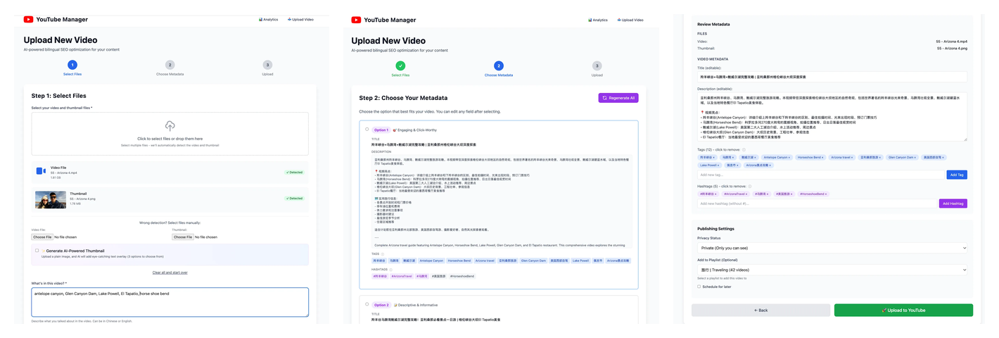
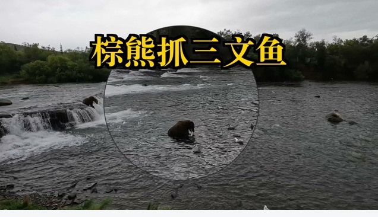
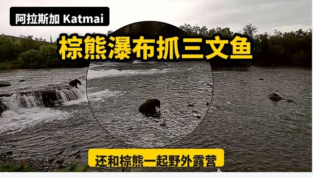
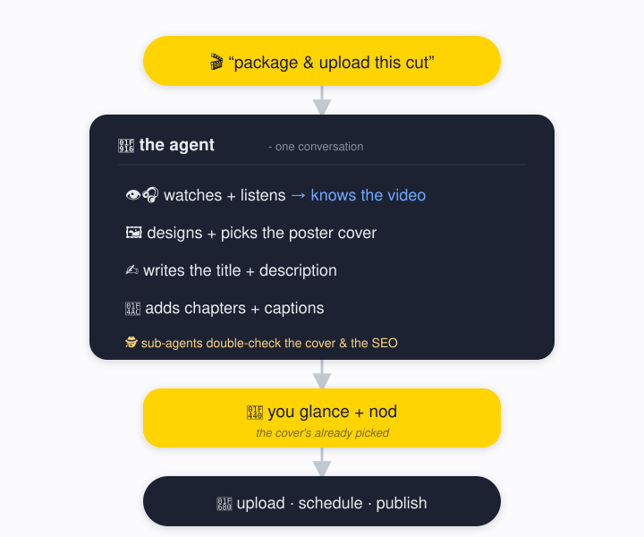
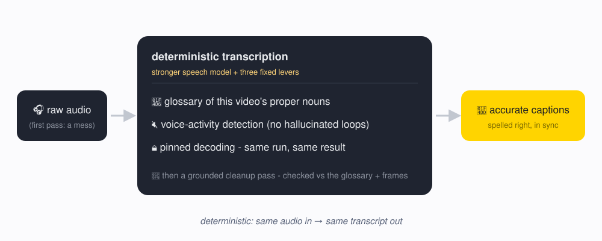

Reworking my YouTube tool from a web app into a conversation.
TLDR
- A while back I vibe-coded a Flask web app to automate my YouTube publishing - a three-step wizard: pick files, choose AI-drafted metadata, review, upload. The one AI call that drafted titles and descriptions was the smartest thing in the app, and the part I'd penned in tightest.
- Pulling the UI out altogether improved the whole workflow: the same model is no longer capped at the single question I'd wired it to answer.
- The interface between a human and an AI doesn't have to be a UI. I rebuilt the whole thing as a conversation in the terminal - and once it wasn't boxed into my screens, it started doing things no screen of mine could.
- For instance, it caught that I'd dropped the wrong export into a project folder - the footage didn't match the folder's theme, so publishing it would have shipped an entirely different video - and refused to proceed until I confirmed. I never built a check for that. I didn't have to.
- The takeaway: don't box the agent in. Tell it what you want, hand it good reusable skills, and let it work out how.
From a UI to a conversation
Last time, I spent a weekend building a proper tool for this - a Flask web app with a three-step upload wizard. What I needed was simple: take a finished video, write a good bilingual title and description, make a thumbnail, upload. I wired in one Claude API call to draft the metadata; everything else was buttons and screens.

But every screen was a box. The wizard could pick from these files, offer these AI-drafted titles, review these fields, upload - nothing past that. The Claude call lived inside one step, and the screen around it could only ever ask the single question I'd built in: give me some title and description options. The model sitting right there could have watched the footage, caught my mistakes, designed the thumbnail by eye - but the app could only do what I'd built a screen for. I had capped it at exactly what I'd thought to let it do.
So I didn't set out to delete the UI. I just started rewriting, talking to the agent instead of clicking through the app, and the interface quietly fell away. I told it what I wanted, not how. When I asked whether it could read the audio so it actually knew what the video was about, it worked the method out itself - reached for ffmpeg, the standard command-line tool for audio and video (which it had installed earlier, unprompted, when it noticed the machine couldn't extract frames), pulled out the audio track, and ran a local transcription. When I asked how it would even get a thumbnail image, it pulled frames straight from the video; its first sweep grabbed one every couple of minutes, I said that was too sparse, and it came back with a dense contact sheet and zoomed into the promising moments. Captions were never in my plan; only once the transcript was sitting there did I realize it could clean them up and upload them as subtitles, so I asked, and it did. The skill I ended up with is just the residue of that back-and-forth - me saying what I wanted, the agent working out how, me nudging, it adjusting.
And the openness kept paying off in ways a fixed workflow couldn't. Working through a backlog, it stopped on one: the duration didn't match its folder, and the frames showed a clip from a completely different trip than the folder was labeled for. Its note, in effect - you exported the wrong timeline into this folder; I'm not touching it until you confirm. It was right; I'd dropped the wrong export in, and the old wizard would have cheerfully published it under the wrong title. It caught the mistake because it looked at the frames, not the folder name - a check I never built, and never needed to.
Letting it exert agency
That's the pattern the rest of the project is made of: get out of the agent's way, and it reaches for things a UI never could.
The clearest case is the thumbnail. It designs by looking at the image - it reads the actual frame and keeps the title text off our faces (mine and my wife's), because I told it once that letting words cover a face kills the shot. The old tool had me drag text around with a slider by hand; that slider is gone, because the thing placing the text is the thing that can see the face.
The look took iterating, too. My first cut was just flat text dropped onto a raw, ungraded frame:

So I found a post on making strong covers, had the agent study it, and rebuild the renderer into a proper graded poster - color grade, a heavy poster typeface, a corner tag, a one-line promise strip:

Even then it got it wrong on the first try - on another video it printed the title straight across the face of a famous statue, Michelangelo's David. I only caught it because I'd wired a sub-agent to inspect every thumbnail and fail it if the text covers the subject. Make the image, then have something look at it before a human does.
Another instance of it checking its own work before I saw it: it quietly spun up critic sub-agents to pick apart its own draft metadata. One came back unconvinced by the title - it led with "Tampa," but the real draw of that video was Sarasota, where both the landmark and the search traffic were. It rewrote the title to lead with Sarasota before the draft ever reached me - the agent overruling its own first instinct, with no prompt from me.
The same hands-off pattern ran all the way through the upload itself. The entire conversation with YouTube's API - the resumable upload, the scheduled publish time, the caption track, the playlist - the agent handled. I'd just say things in plain language: put this in my travel playlist. I never gave it the playlist's exact name or its ID; it looked at my channel, matched my loose description to the right collection, and added the video to it. The old wizard had a dropdown for that; here there was nothing to click - I described what I wanted, and it resolved the specifics.
None of this lived in a settings panel. It couldn't have - a UI can only ever hold the choices you anticipated.
Where the AI sits, and where I still do
Here's the whole pipeline. By the time it reaches me even the cover is already the agent's pick, so my one remaining job is to glance and nod:

Corrections are the product
Here's the loop that makes this more than a one-off script. Every time I corrected the agent, the correction didn't just fix that one video - it became a durable rule in memory. Over a single session the pile grew:
- Don't put our names in the description.
- Publish in numbered order, every two days.
- Match the day-count in the title to the actual video. (It had put "complete 3-day guide" in the title of a one-day video.)
- Don't claim we saw something we didn't. On one hike it wrote that we saw a marmot - but we never did; the trail just passes a spot called "Marmot Meadows." It cut the sighting, kept the place name.
None of these came from a settings panel. I said each once, in passing - "add this to your skill so you won't forget" - and the next video already knew.
The captions were the sharpest version of this. I told it the first-pass subtitles were full of errors, and it didn't just patch lines by hand: it judged that its speech model was too weak, downloaded a much larger one itself, and re-ran the transcription. But a better model alone wasn't enough. The agent can't actually hear the audio - it only reads a transcript some other model produced - so it can't prompt its way to an accurate one; it needs tooling that's deterministic (same audio in, same transcript out): the fixed pipeline below. That's the honest caveat to don't box the agent in - autonomy still needs engineering, and some of the scaffolding has to be rigid and repeatable, not creative.

The upload works the same way. The agent supplies the judgment - which playlist, what publish time, whether the cover is legible - but the actual YouTube API calls live in small deterministic scripts it invokes, identical every run. Judgment from the model; the repeatable machinery from code. "Give the agent room" never meant "make it improvise the plumbing."
A recipe you can run
The repo is a reusable recipe. If you want to publish your own videos with AI, send this post to your own agent, point it at the repo, tweak a little for your channel, and get a fast win the same afternoon - the whole SKILL.md is right there. What you add on top is the taste: your channel's voice, your face, your corrections.
It's also cheap to run. The old version called a metered API key; the rebuild deleted that path - generation now goes through the Claude Code subscription, and transcription runs on a local whisper.cpp model. No per-call billing, and the audio never leaves the machine.
Learnings
- The human-AI interface doesn't have to be a UI. A terminal is enough. A web app can only expose the buttons you anticipated; the agent could catch a misfiled clip precisely because I never built a page for it. You're the rudder, not the cage.
- Make the agent perceive, not just generate. Because it watches the frames and listens to the audio, it actually knows what the video is - which is the whole reason it can file and describe it sensibly instead of guessing from a filename.
- Autonomy still needs engineering. The agent supplies judgment, but the repeatable machinery underneath - the transcription pipeline, the YouTube API calls - is deterministic code that runs the same every time. Accuracy and reliability are a pipeline, not a prompt.
- Corrections compound into taste. Each "no, not like that" becomes durable memory, and the system gets more me with every video - that accumulated taste, not the code, is the thing worth anything. The next rung is closing the loop with real numbers: feeding YouTube analytics back in so it biases future titles and thumbnails toward what actually performed.
Don't wrap the agent. Talk to it, work inside it, hand it good skills, and let it reach for the things you'd never have built a page for - then let the corrections compound. This is the first version of it I'll ever use, and it's the worst one too.
Further reading: 课代表 on video post-production. I only found it partway through - after the basics were already working - so it didn't shape the original plan, but I had the agent lean on it to sharpen the covers, and it lands on a lot of the same ideas.